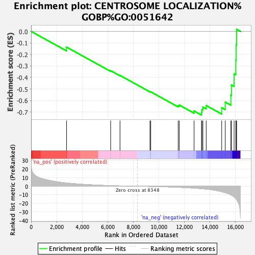
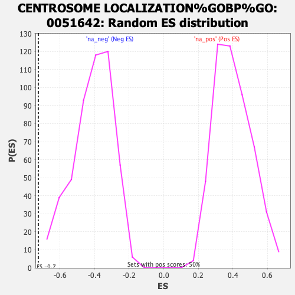

| Dataset | ranked_gene_list |
| Phenotype | NoPhenotypeAvailable |
| Upregulated in class | na_neg |
| GeneSet | CENTROSOME LOCALIZATION%GOBP%GO:0051642 |
| Enrichment Score (ES) | -0.72607344 |
| Normalized Enrichment Score (NES) | -1.7631388 |
| Nominal p-value | 0.0 |
| FDR q-value | 0.20631202 |
| FWER p-Value | 0.983 |

| SYMBOL | RANK IN GENE LIST | RANK METRIC SCORE | RUNNING ES | CORE ENRICHMENT | |
|---|---|---|---|---|---|
| 1 | SUN2 | 2780 | 3.809 | -0.1364 | No |
| 2 | MISP | 6236 | 0.724 | -0.3408 | No |
| 3 | NDE1 | 6968 | 0.389 | -0.3820 | No |
| 4 | PARD3 | 9318 | -0.243 | -0.5232 | No |
| 5 | TBCCD1 | 9379 | -0.264 | -0.5246 | No |
| 6 | NDEL1 | 11530 | -1.215 | -0.6451 | No |
| 7 | EZR | 11616 | -1.272 | -0.6392 | No |
| 8 | INTS13 | 12776 | -2.214 | -0.6906 | No |
| 9 | GPSM2 | 13358 | -2.833 | -0.7014 | Yes |
| 10 | PKHD1 | 13394 | -2.875 | -0.6784 | Yes |
| 11 | PARD3B | 13468 | -2.986 | -0.6569 | Yes |
| 12 | DLGAP5 | 13727 | -3.350 | -0.6434 | Yes |
| 13 | KIF5B | 14942 | -6.341 | -0.6622 | Yes |
| 14 | SYNE2 | 15219 | -7.486 | -0.6137 | Yes |
| 15 | DLG1 | 15662 | -10.057 | -0.5530 | Yes |
| 16 | NIN | 15708 | -10.447 | -0.4647 | Yes |
| 17 | AKAP9 | 15915 | -12.545 | -0.3679 | Yes |
| 18 | CEP83 | 16049 | -14.658 | -0.2482 | Yes |
| 19 | RANBP2 | 16077 | -15.172 | -0.1176 | Yes |
| 20 | BICD2 | 16113 | -15.824 | 0.0182 | Yes |
